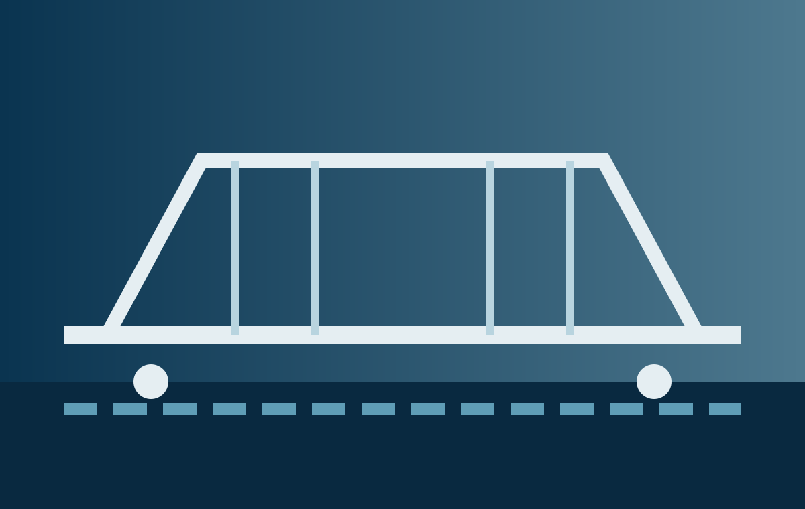

01
Fabricated project packages
Drawing-based steelwork, supports, brackets and assemblies where factory fabrication can reduce site work.
Sourcing support for selected steel, pipework, fasteners, fabricated items and cross-category project materials — evaluated against specification, logistics and total delivered cost.

Steel and construction materials can be price-sensitive, heavy and locally competitive. Freight, loading efficiency, fabrication, coatings and site delivery can quickly change the commercial result.
Drawing-based steelwork, supports, brackets and assemblies where factory fabrication can reduce site work.
Pipes, fittings, flanges, fasteners and accessories coordinated around material and dimensional standards.
Cross-category packages where combined purchasing and container planning improve delivery economics.
Final scope depends on the actual specification, supplier capability and complete delivery requirement.
Selected carbon-steel and other specified pipework, tubes, flanges, fittings and connection products.
Sections, plates, supports, brackets and fabricated assemblies produced from approved drawings.
High-tensile bolts, anchors, threaded products and selected structural fastener packages.
Selected grating, fencing, handrail components and construction hardware.
Selected fabricated tanks and modular products where dimensions, transport and assembly responsibilities are defined.
Send the available RFQ, BOQ, drawings, specifications or product information for an initial sourcing review.